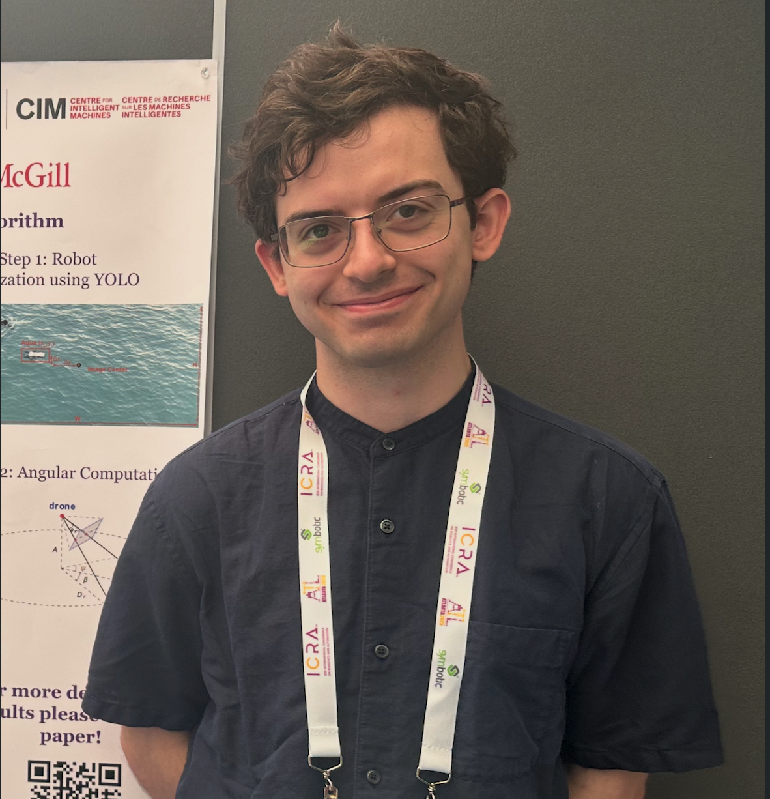
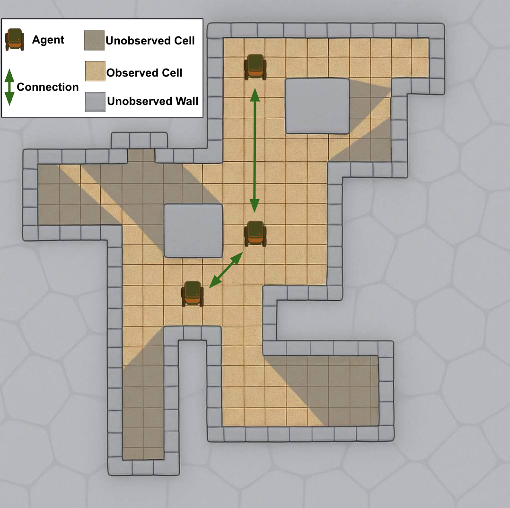
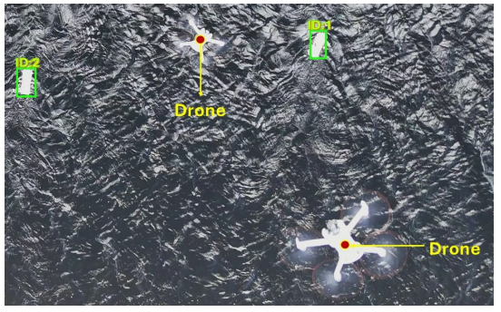
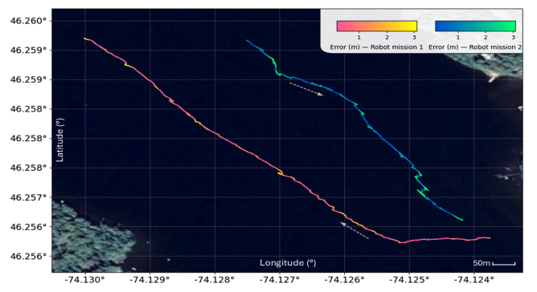
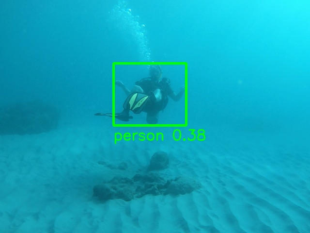
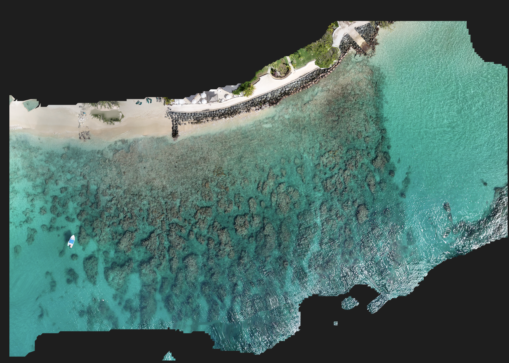
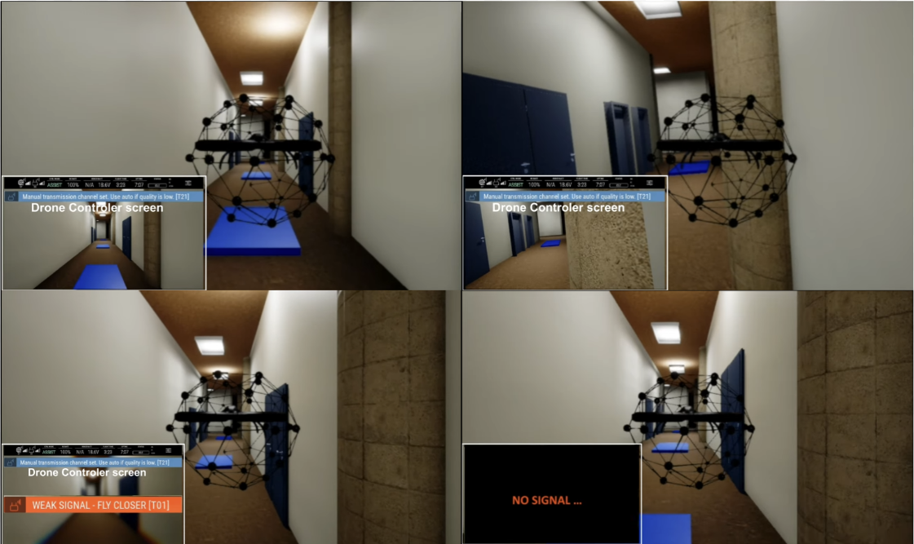

Double PhD student at McGill University and Université Paris-Saclay (CentraleSupélec), supervised by Professor Gregory Dudek and Dr. Antonio Loria. Researching multi-agent systems, autonomous robotics, and distributed perception in constrained environments.

My research sits at the intersection of AI, robotics, and communication theory. I develop algorithms for multi-agent systems that enable teams of mobile ground and aerial robots to create ad-hoc communication networks in uncertain, partially observable environments. This work draws on computational geometry, game theory, reinforcement learning, and large language models to solve real-world coordination problems.
Before starting my PhD, I completed a Master's in Computer Engineering (thesis track) at McGill under Professor Aditya Mahajan, focusing on robust optimization for path coverage under adversarial uncertainty. My undergraduate work at UMass Lowell spanned five research labs, where I developed drone evaluation methodologies for the US Army, built assistive navigation devices, and founded the university's Drone Club.
Cooperative planning and control for heterogeneous robot teams
Aerial and ground vehicles in GPS-denied and subterranean settings
Ad-hoc network deployment under connectivity constraints
Cooperative sensing and estimation across constrained environments
Proposed the Partially Observable Cooperative Guard Art Gallery Problem (POCGAGP) to model the deployment of mobile ad-hoc communication networks in constrained environments. Developed centralized (CADENCE) and decentralized (DADENCE) algorithms for network deployment. The POCGAGP provides a mathematical formulation for network deployments in constrained environments as an expansion on the Art Gallery Problem and the Cooperative Guard Art Gallery Problem. Ongoing work looks at extending the POCGAGP into continuous spaces with more relaxed spatial geometries and developing improvements to the underlying solutions with a goal to utilize both classical optimization and learning-based methods to solve the problem.

Developed a cooperative multi-agent aerial–marine system using multiple drones to estimate GNSS positions of submerged and surface robots. Designed multi-drone tracking, cross-drone ID alignment, and multi-view estimation methods for robust localization. Applied triangulation and Extended Kalman Filtering for real-time multi-robot localization, validated through field deployments.


Developed a comprehensive marine dataset for tracking and mappning purposes. With data colleted both off the coast of Barbados and in the lakes of Quebec.


Developed robust path coverage strategies for multi-agent search and rescue using Nash Equilibria, graph theory, and game theory. Modeled environments as Markov Decision Processes with stochastic controls, extending to Partially Observable MDPs (POMDPs) through belief-state construction to capture world uncertainty.
Investigated communication robustness in decentralized swarms using the Couzin model under packet loss and degraded conditions. Analyzed how communication failures affect swarm cohesion, collision avoidance, and collective behavior. Developed distributed strategies including packet redundancy and inter-agent passing to improve stability under limited connectivity.
Developed test methodologies to evaluate drones in GPS-denied underground environments for the US Army. Concentrated on navigation, collision tolerance, communication robustness, and human-robot trust. Work included both real-world testing of 8 commercial sUAS platforms and simulation in Microsoft AirSim. Over 230 tests were conducted and results published in multiple venues.

Co-developed a wearable device to aid visually impaired users in navigation using depth-mapping (Intel D435i) and directional audio feedback. Evolved from an Arduino-powered lidar prototype to a full Rust-based processing pipeline. Won $4,000 from the UML Difference Maker competition and presented at RID2023 in Montreal.
I have had the opportunity to supervise undergraduate and Master's students at both McGill University and Université Paris-Saclay, guiding their research across topics at the intersection of multi-agent systems, robotics, and AI.
Undergraduate research project exploring the use of large language models (LLMs) to solve game-theoretic problems. How can LLMs can coordinate with discussing to find solutions that beat Nash Equilibria in multi-agent settings. The project investigates the potential of LLMs to enhance decision-making and strategy formulation in complex game-theoretic scenarios, particularly those involving multiple agents with competing interests.
Undergraduate research project focused on extending the Partially Observable Cooperative Guard Art Gallery Problem (POCGAGP) to dynamic environments and settings where agents can be destroyed. The original CADENCE and DADENCE algorithms were modified to handle these settings.
Undergraduate research project related to path planning of multi-agent systems using large language models. The project focuses on developing decentralized models that leverage the reasoning capabilities of LLMs to enable efficient path planning in complex environments. The research explores how LLMs can be integrated into multi-agent systems to improve decision-making and coordination among agents, particularly in scenarios with limited communication and partial observability.
Full list on Google Scholar · 48 citations
"Robust Shortest Path with Incremental Information Revelation." 2025.
Presented at the Robots in the Wild workshop at ICRA 2025.
Presented at Hcode 2026.
Presented full Navigation and Collision Tolerance results to the US Army and associated parties. Fall 2022.
"Evaluation of Navigation and Trajectory-following Capabilities of Small Unmanned Aerial Systems." Fall 2022.
"Performance Comparison of Machine Learning Methods in DDoS Attack Detection in Smart Grids." Fall 2022.
Presented rebuilt Rust-based NAVLENZ system at the RID2023 innovation competition. Spring 2023.
Won Sutherland Innovative Technology Solution Award for NAVLENZ. Spring 2021.